Part 16 Example geoms and Plots
16.1 Bar chart
theme_set(theme_classic())
ggplot(penguins) +
aes(x = species) +
geom_bar()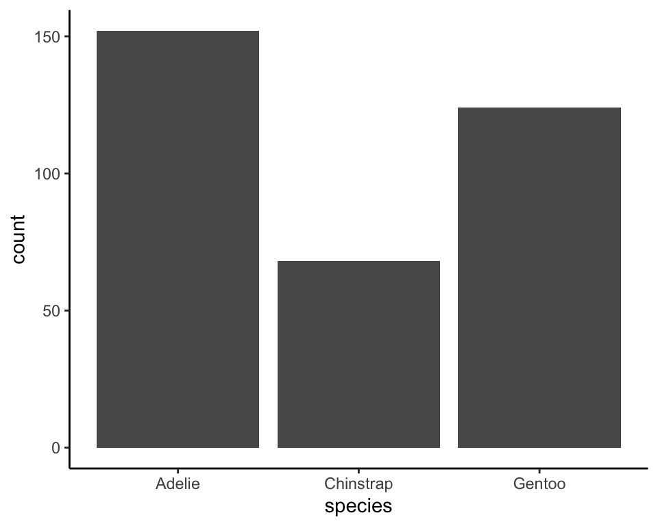
16.2 Stacked bar chart
ggplot(penguins) +
aes(y = island,
color = fct_rev(species),
fill = fct_rev(species),
label = fct_rev(species)) +
stat_count(orientation = "y") +
guides(color = guide_none(),
fill = guide_none()) +
ylab(NULL) +
stat_count(geom = "label",
color = "white")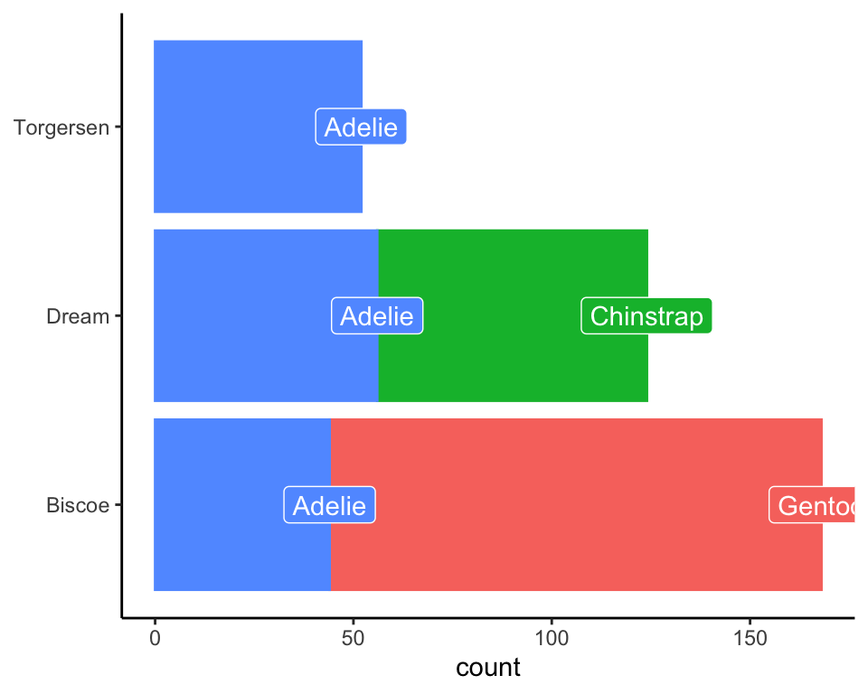
16.3 Pie chart
ggplot(penguins) +
aes(x = factor(1),
fill = species,
label = species) +
geom_bar(width = 1) +
stat_count(geom = "text",
size = 5,
color = "white",
position = position_stack(vjust = .5)
) +
guides(y = guide_none(),
x = guide_none(),
fill = guide_none()) +
xlab(NULL) +
ylab(NULL) +
coord_polar(theta = "y") +
theme(axis.text = element_blank(),
axis.line = element_blank(),
axis.ticks = element_blank())
16.4 Histogram
ggplot(penguins) +
aes(x = bill_length_mm) +
geom_histogram(binwidth = 1)
#> Warning: Removed 2 rows containing non-finite values (stat_bin).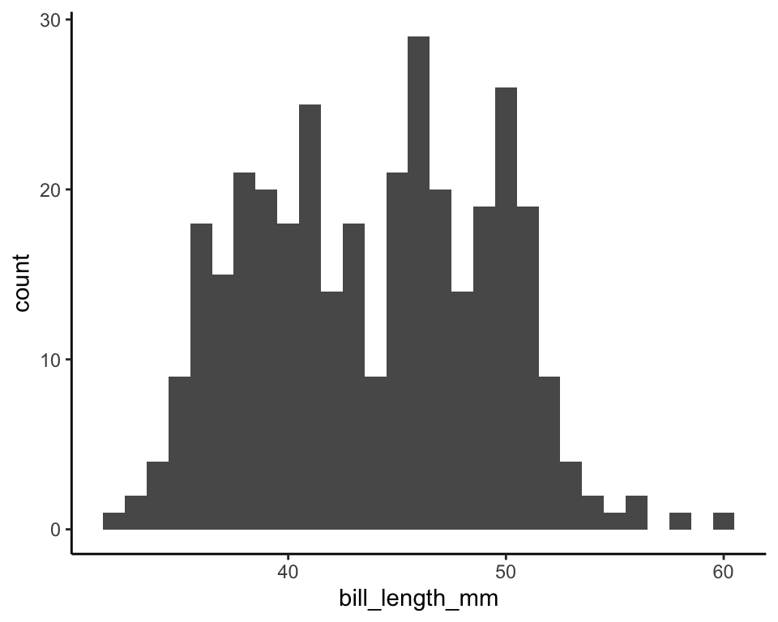
16.5 Density
ggplot(penguins) +
aes(x = bill_length_mm) +
geom_density()
#> Warning: Removed 2 rows containing non-finite values (stat_density).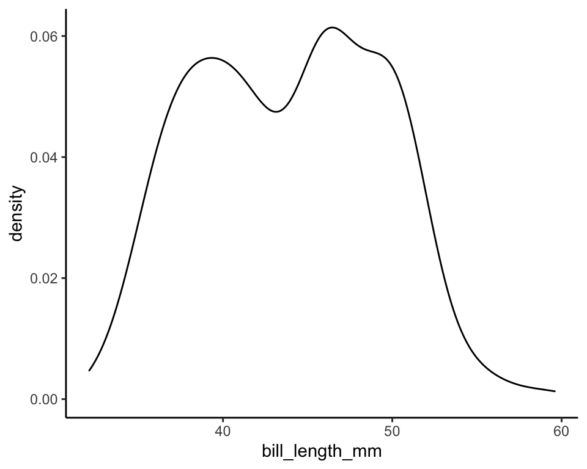
16.6 Dot plot
ggplot(penguins) +
aes(x = bill_length_mm) +
geom_dotplot(binwidth = 1,
dotsize = .5) +
guides(y = guide_none())
#> Warning: Removed 2 rows containing non-finite values (stat_bindot).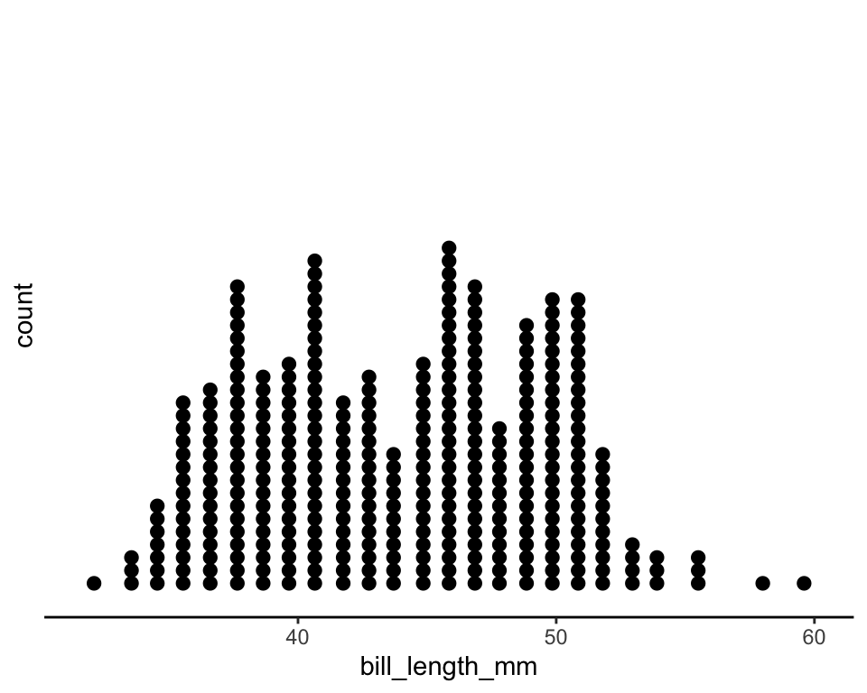
16.7 Scatterplots
# Scatterplot 1
ggplot(penguins) +
aes(x = bill_length_mm,
y = flipper_length_mm) +
geom_point()
#> Warning: Removed 2 rows containing missing values (geom_point).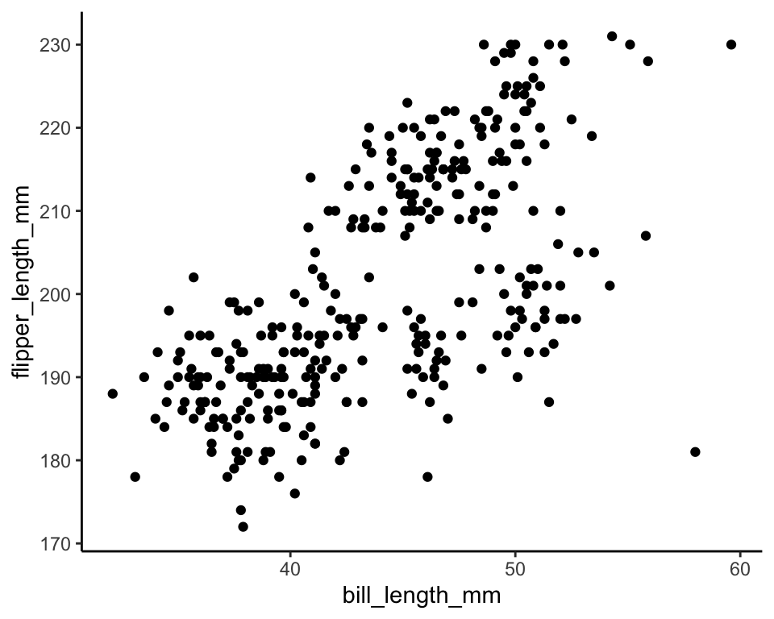
# Scatterplot 2
ggplot(penguins) +
aes(x = bill_length_mm,
y = flipper_length_mm,
fill = species,
color = species,
shape = species) +
geom_point()
#> Warning: Removed 2 rows containing missing values (geom_point).
# Scatterplot 3
ggplot(penguins) +
aes(x = bill_length_mm,
y = flipper_length_mm,
fill = species,
color = species,
shape = sex,
size = body_mass_g) +
geom_point()
#> Warning: Removed 11 rows containing missing values (geom_point).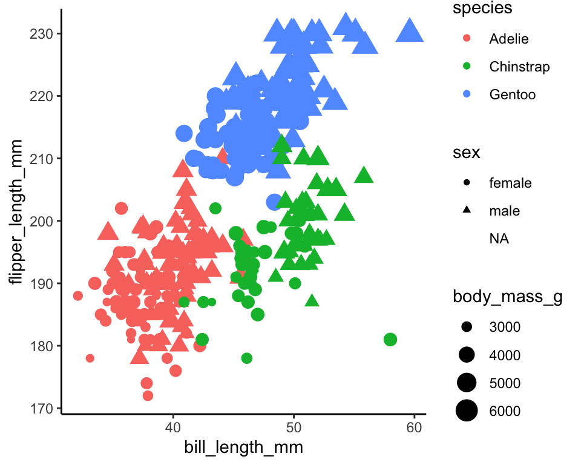
16.8 More scatterplots
# Scatterplot 4
ggplot(round(alr4::Heights)) +
aes(x = mheight,
y = dheight) +
geom_point()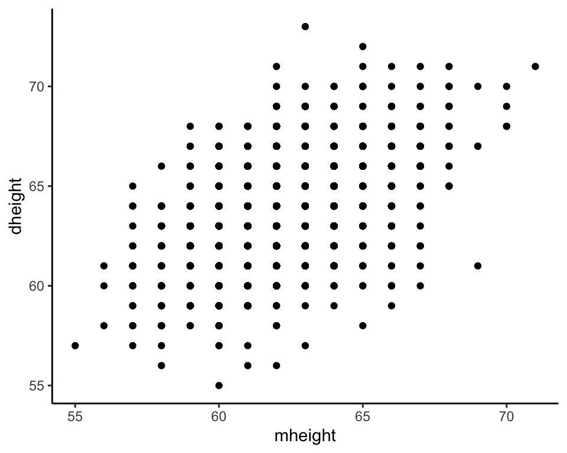
# Scatterplot 5
ggplot(round(alr4::Heights)) +
aes(x = mheight,
y = dheight) +
geom_jitter(height = .3, width = .3)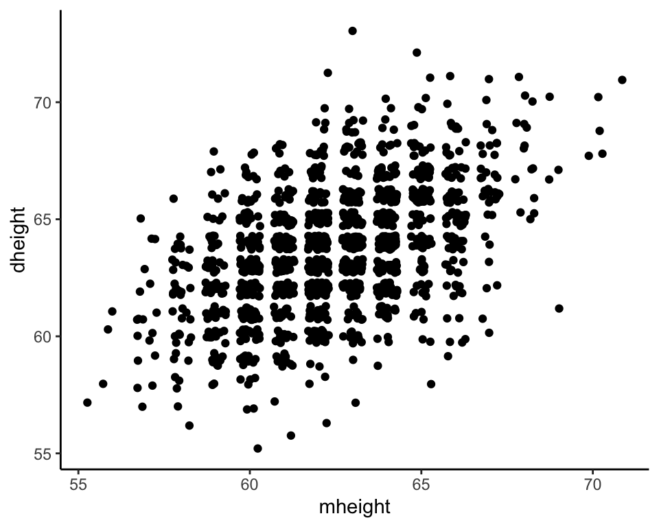
16.9 Building complex plots
# Scatterplot 6
ggplot(penguins) +
aes(x = species,
y = flipper_length_mm,
fill = species,
color = species) +
geom_point()
#> Warning: Removed 2 rows containing missing values (geom_point).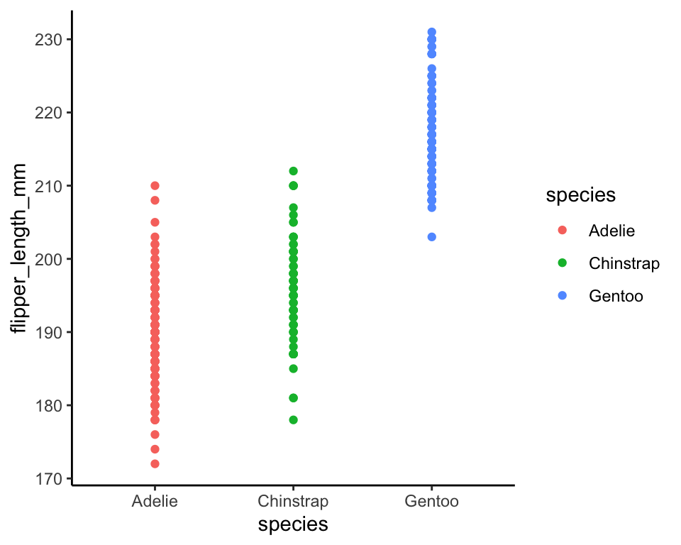
# Scatterplot 7
ggplot(penguins) +
aes(x = species,
y = flipper_length_mm,
fill = species,
color = species) +
geom_jitter(height = 0,
width = .4)
#> Warning: Removed 2 rows containing missing values (geom_point).
# Scatterplot 8
ggplot(penguins) +
aes(x = species,
y = flipper_length_mm,
fill = species,
color = species) +
geom_jitter(height = 0,
width = .4) +
geom_boxplot(color = "black",
alpha = .5)
#> Warning: Removed 2 rows containing non-finite values (stat_boxplot).
#> Warning: Removed 2 rows containing missing values (geom_point).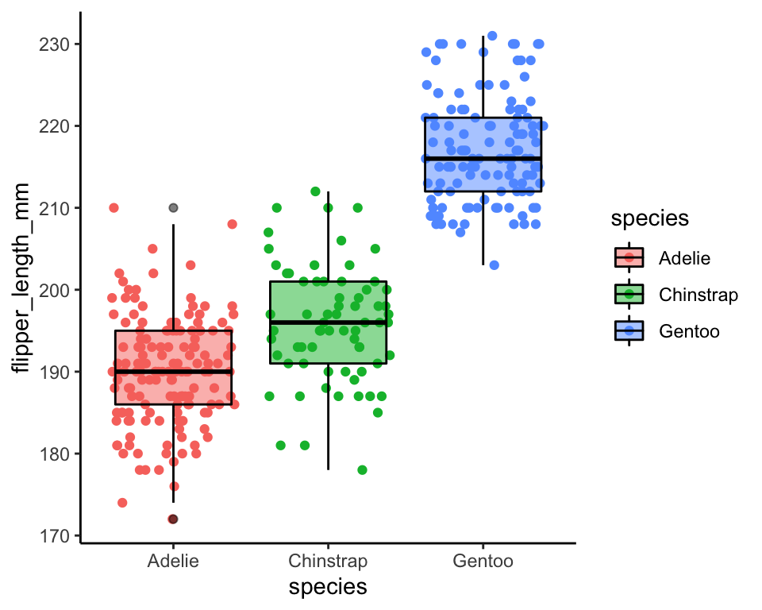
# Raincloud plot
ggplot(na.omit(penguins)) +
aes(y = species,
x = flipper_length_mm,
fill = species,
color = species) +
geom_jitter(height = .15) +
geom_boxplot(color = "black",
alpha = .5,
width = .1,
size = .5) +
ggdist::stat_slab(height = .3,
color = "black",
size = .2,
alpha = .5,
position = position_nudge(y = .2))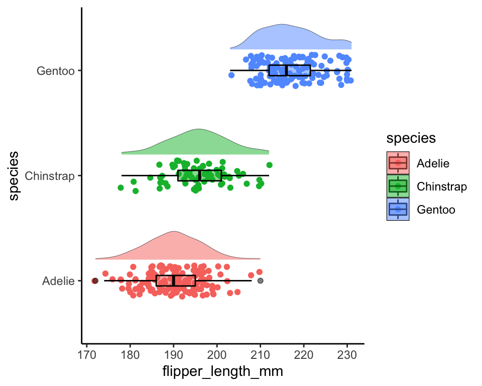
16.10 Scatterplots for change
df <- data.frame(
id = 1:30,
before = rnorm(30),
after = rnorm(30))
df <- tidyr::pivot_longer(
df,
-id,
names_to = "time",
values_to = "score")
ggplot(df) +
aes(x = time,
y = score,
group = id) +
geom_point() +
geom_line()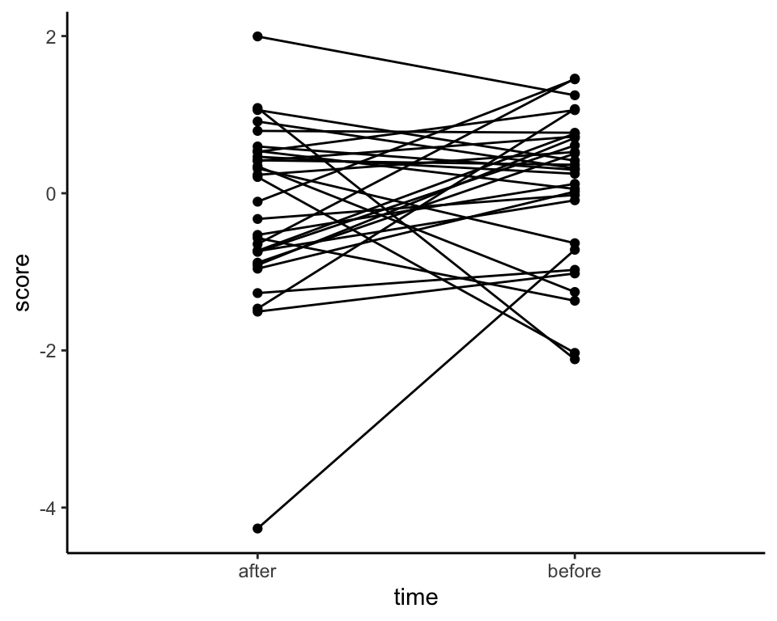
16.11 Comparing distributions
df <- data.frame(
g = c(rep("a", times = 100),
rep("b", times = 100),
rep("c", times = 100),
rep("d", times = 100),
rep("e", times = 100)),
z = c(rnorm(100, mean = 0, sd = 1),
rnorm(100, mean = 1, sd = 2),
rnorm(100, mean = 2, sd = 3),
rnorm(100, mean = 3, sd = 4),
rnorm(100, mean = 4, sd = 5))
)
# Overlapping densities
ggplot(df) +
aes(x = z,
group = g,
fill = g) +
geom_density(size = .2,
alpha = .5)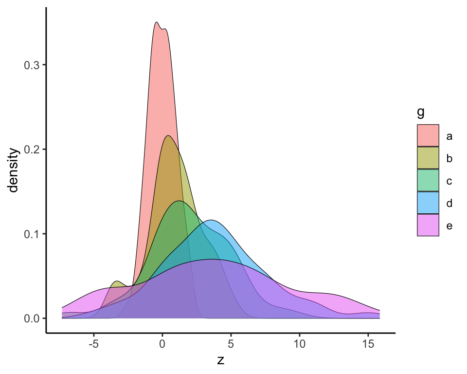
# Ridge plot
ggplot(df) +
aes(x = z,
y = g,
fill = g) +
ggridges::geom_density_ridges(
size = .2,
alpha = .5,
scale = 4
)
#> Picking joint bandwidth of 1.03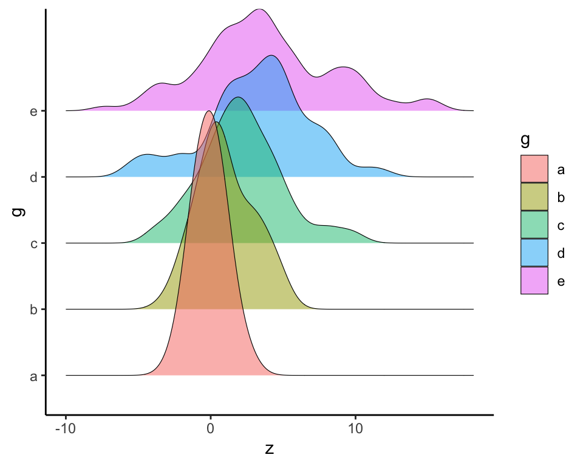
16.12 Scatterplot matrix
penguins_focal <- penguins[, c("species",
"bill_length_mm",
"flipper_length_mm",
"sex")]
pairs(penguins_focal)
GGally::ggpairs(
penguins_focal,
mapping = aes(color = species, alpha = .5),
lower = list(
continuous = "smooth_loess",
combo = "facethist",
discrete = "facetbar",
na = "na"
)
) + theme_classic()
#> Registered S3 method overwritten by 'GGally':
#> method from
#> +.gg ggplot2
#> Warning: Removed 2 rows containing non-finite values (stat_boxplot).
#> Warning: Removed 2 rows containing non-finite values (stat_boxplot).
#> `stat_bin()` using `bins = 30`. Pick better value with `binwidth`.
#> Warning: Removed 2 rows containing non-finite values (stat_bin).
#> Warning: Removed 2 rows containing non-finite values (stat_density).
#> Warning in ggally_statistic(data = data, mapping = mapping, na.rm = na.rm, :
#> Removed 2 rows containing missing values
#> Warning: Removed 2 rows containing non-finite values (stat_boxplot).
#> `stat_bin()` using `bins = 30`. Pick better value with `binwidth`.
#> Warning: Removed 2 rows containing non-finite values (stat_bin).
#> Warning: Removed 2 rows containing non-finite values (stat_smooth).
#> Warning: Removed 2 rows containing missing values (geom_point).
#> Warning: Removed 2 rows containing non-finite values (stat_density).
#> Warning: Removed 2 rows containing non-finite values (stat_boxplot).
#> `stat_bin()` using `bins = 30`. Pick better value with `binwidth`.
#> Warning: Removed 2 rows containing non-finite values (stat_bin).
#> `stat_bin()` using `bins = 30`. Pick better value with `binwidth`.
#> Warning: Removed 2 rows containing non-finite values (stat_bin).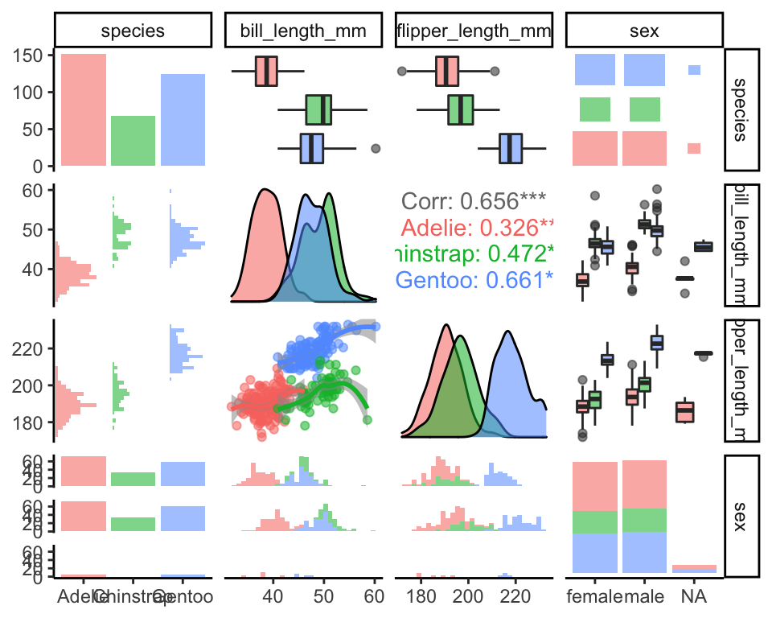
16.13 Smoothers and Exploratory Data Analysis
# Smoother 1
ggplot(penguins) +
aes(x = bill_length_mm,
y = flipper_length_mm,
fill = species,
color = species) +
geom_point() +
geom_smooth(color = "black",
fill = "black")
#> `geom_smooth()` using method = 'loess' and formula 'y ~ x'
#> Warning: Removed 2 rows containing non-finite values (stat_smooth).
#> Warning: Removed 2 rows containing missing values (geom_point).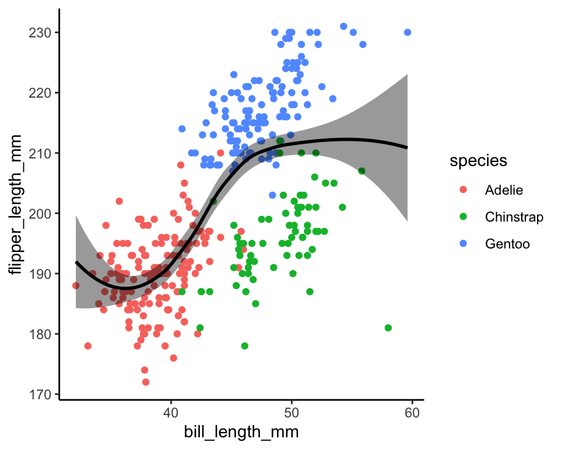
# Smoother 2
ggplot(penguins) +
aes(x = bill_length_mm,
y = flipper_length_mm,
fill = species,
color = species) +
geom_point() +
geom_smooth(color = "black",
fill = "black") +
geom_smooth(method = "lm",
color = "orange",
fill = "orange")
#> `geom_smooth()` using method = 'loess' and formula 'y ~ x'
#> Warning: Removed 2 rows containing non-finite values (stat_smooth).
#> `geom_smooth()` using formula 'y ~ x'
#> Warning: Removed 2 rows containing non-finite values (stat_smooth).
#> Warning: Removed 2 rows containing missing values (geom_point).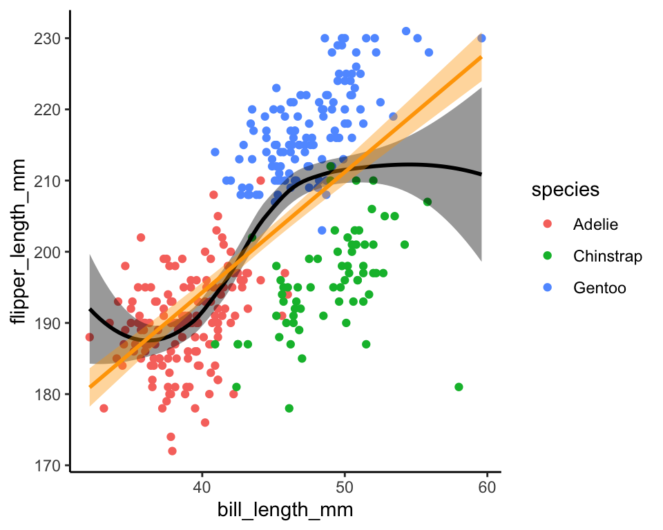
# Smoother 3
ggplot(penguins) +
aes(x = bill_length_mm,
y = flipper_length_mm,
fill = species,
color = species) +
geom_point() +
geom_smooth()
#> `geom_smooth()` using method = 'loess' and formula 'y ~ x'
#> Warning: Removed 2 rows containing non-finite values (stat_smooth).
#> Warning: Removed 2 rows containing missing values (geom_point).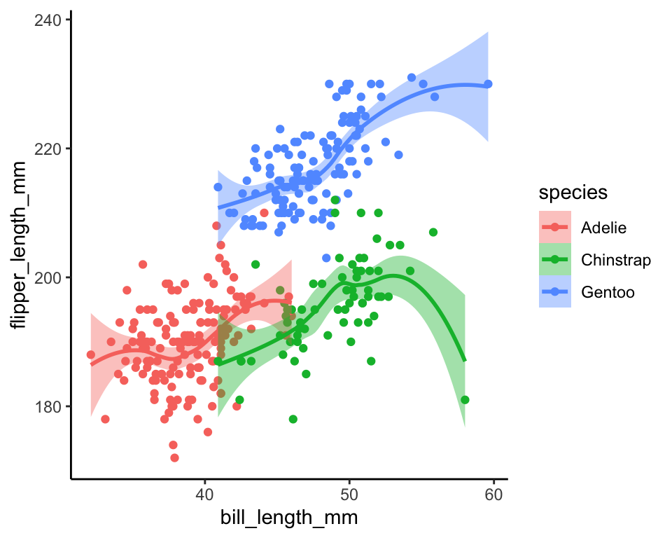
# Smoother 4
ggplot(penguins) +
aes(x = bill_length_mm,
y = flipper_length_mm,
fill = species,
color = species) +
geom_point() +
geom_smooth() +
geom_smooth(method = "lm",
color = "black",
linetype = "dashed")
#> `geom_smooth()` using method = 'loess' and formula 'y ~ x'
#> Warning: Removed 2 rows containing non-finite values (stat_smooth).
#> `geom_smooth()` using formula 'y ~ x'
#> Warning: Removed 2 rows containing non-finite values (stat_smooth).
#> Warning: Removed 2 rows containing missing values (geom_point).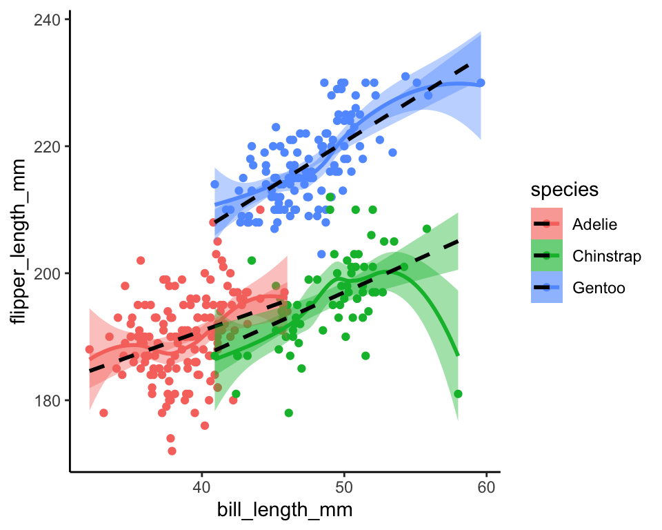
# Smoother 5
ggplot(penguins) +
aes(x = bill_length_mm,
y = flipper_length_mm,
fill = species,
color = species) +
geom_point() +
geom_smooth(method = "lm",
linetype = "dashed") +
geom_smooth(color = "black",
fill = "black",
alpha = .2) +
geom_smooth(method = "lm",
color = "orange",
fill = "orange",
alpha = .2)
#> `geom_smooth()` using formula 'y ~ x'
#> Warning: Removed 2 rows containing non-finite values (stat_smooth).
#> `geom_smooth()` using method = 'loess' and formula 'y ~ x'
#> Warning: Removed 2 rows containing non-finite values (stat_smooth).
#> `geom_smooth()` using formula 'y ~ x'
#> Warning: Removed 2 rows containing non-finite values (stat_smooth).
#> Warning: Removed 2 rows containing missing values (geom_point).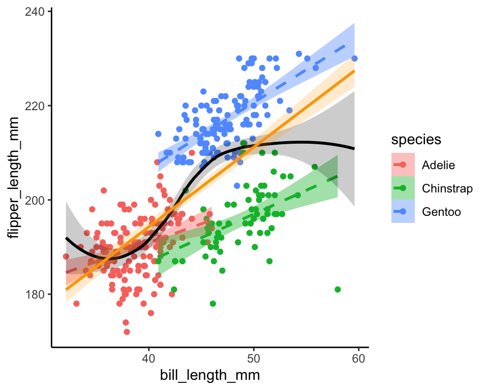
# Smoother 6
ggplot(penguins) +
aes(x = flipper_length_mm,
y = bill_length_mm,
color = species,
fill = species,
shape = species,
linetype = species) +
geom_point(alpha = .7) +
geom_smooth() +
theme_bw() +
theme(legend.position = "bottom")
#> `geom_smooth()` using method = 'loess' and formula 'y ~ x'
#> Warning: Removed 2 rows containing non-finite values (stat_smooth).
#> Warning: Removed 2 rows containing missing values (geom_point).